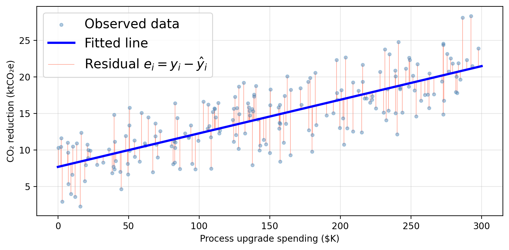
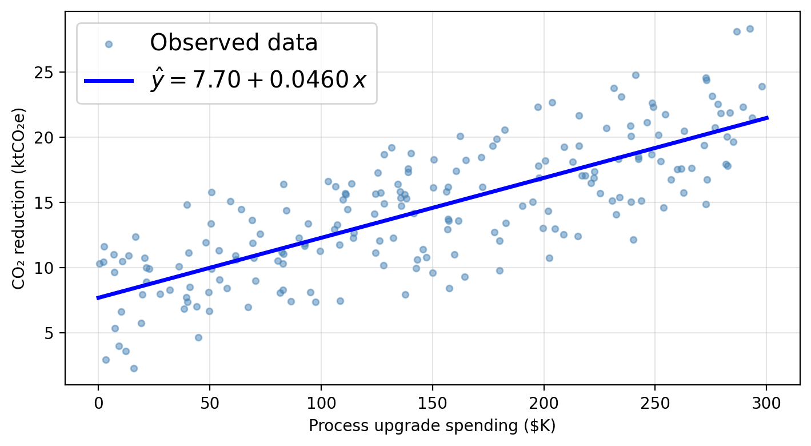

Linear regression supports both inference and prediction.

EDS 232
Lesson 3
Simple linear regression
Regression estimates relationships between predictors and a response. It can help answer questions such as:
. . .
Linear regression supports both inference and prediction.
A guiding example
A research consortium tracks 200 manufacturing firms. For each firm, they record annual spending on three emissions-reduction strategies and the resulting CO₂ savings:
process — investment in cleaner production processes ($K/year)efficiency — investment in energy efficiency upgrades ($K/year)offsets — carbon offset purchases ($K/year)co2_reduction — annual CO₂ emissions reduced (ktCO₂e/year)The researchers want to understand:
Do these investments actually drive emissions reductions, and if so, by how much?
Synthetic data generated for educational purposes only
. . .
process spending: strongest linear association with CO₂ reductions. We will use this predictor as our variable today and go back to the others in the next lesson.
Simple linear regression
Simple linear regression (SLR) assumes a linear relationship between a single predictor \(X\) and a response \(Y\):
\[Y \approx \beta_0 + \beta_1 X\]
. . .
. . .
Since \(\beta_0\) and \(\beta_1\) are unknown, we estimate them from data:
\[\hat{y} = \hat{\beta}_0 + \hat{\beta}_1 x = \hat{f}(x)\]
Using process as the sole predictor, a linear model for our data would assume this functional form:
\[\texttt{co2_reduction} \approx \hat{\beta}_0 + \hat{\beta}_1 \cdot \texttt{process}\]


\(\hat{\beta}_0 \approx\) 7.70 ktCO₂e: predicted CO₂ reduction when a firm spends $0 on process upgrades (baseline).
\(\hat{\beta}_1 \approx\) 0.0460 ktCO₂e per $K: each additional $1K in process spending is associated with 0.0460 ktCO₂e of additional reduction.
Just plug in 150 into the line equation!

Estimating the coefficients
Given \(n\) training observations \((x_1, y_1), \ldots, (x_n, y_n)\), we want to find \(\hat{\beta}_0\) and \(\hat{\beta}_1\) such that the line \(\hat{y} = \hat{\beta}_0 + \hat{\beta}_1 x\) is as close as possible to the observed data.
. . .
The residual for observation \(i\) is the difference between observed and predicted:
\[e_i = y_i - \hat{y}_i = y_i - \hat{\beta}_0 - \hat{\beta}_1 x_i\]
. . .
The residual sum of squares (RSS) totals all squared residuals:
\[RSS = \sum_{i=1}^{n} (y_i - \hat{y}_i)^2 = \sum_{i=1}^{n} (y_i - \hat{\beta}_0 - \hat{\beta}_1 x_i)^2.\]
. . .
The least squares approach to fit the regression line chooses \(\hat{\beta}_0\) and \(\hat{\beta}_1\) to minimize the RSS.

Minimizing the RSS using calculus gives the following formulas:
\[\hat{\beta}_1 = \frac{\sum_{i=1}^{n}(x_i - \bar{x})(y_i - \bar{y})}{\sum_{i=1}^{n}(x_i - \bar{x})^2}\]
\[\hat{\beta}_0 = \bar{y} - \hat{\beta}_1 \bar{x}\]
. . .
The estimates depend entirely on the training data: if you feed the model different data, you will get different estimates. This is the source of estimation uncertainty.
In practice, the computer computes these for you.
Accuracy of the coefficient estimates
Our true function describing the relationship between predictor and response is given by \(f(X) = \beta_0 + \beta_1 X\). Our observed data is described by:
\[Y = f(X) + \epsilon = \beta_0 + \beta_1 X + \epsilon,\]
The standard error quantifies how far \(\hat{\beta}_i\) is from the true \(\beta_i\) on average.
The standard error for the slope \(\hat{\beta}_1\) is:
\[SE(\hat{\beta}_1)^2 = \frac{\sigma^2}{\sum_{i=1}^{n}(x_i - \bar{x})^2}\]
The standard error of the \(y\)-intercept \(\hat{\beta}_0\) is:
\[SE(\hat{\beta}_0)^2 = \sigma^2 \left[\frac{1}{n} + \frac{\bar{x}^2}{\sum_{i=1}^{n}(x_i - \bar{x})^2}\right]\]
. . .
\(\sigma^2 = \text{Var}(\epsilon)\) is the error variance (unknown in practice — estimated from the data).
Check-in: In these formulas, what do \(n\), \(x_i\), \(\bar{x}\) represent?
Standard errors allow us to construct confidence intervals for the true coefficients.
A 95% confidence interval is a range of values such that, if we repeated our experiment many times, approximately 95% of the computed intervals would contain the true parameter value.
A 95% confidence interval for a coefficient \(\beta_i\) is:
\[[\hat{\beta}_i - 2 \cdot SE(\hat{\beta}_i),\;\; \hat{\beta}_i + 2 \cdot SE(\hat{\beta}_i)]\]
(the factor 2 is approximate, the exact value comes from the \(t\)-distribution with \(n-2\) degrees of freedom)
. . .
Interpretation:
a 95% CI for \(\beta_1\) of \([a_1, b_1]\) means that, using a procedure that captures the true slope 95% of the time, we estimate that a one-unit increase of \(x\) is associated with an average increase in \(y\) between \(a_1\) and \(b_1\) units.
a 95% confidence inerval for \(\beta_0\) is \([a_0, b_0]\) means that, using a procedure that captures the true intercept 95% of the time, we estimate the model’s \(y\)-intercept is between \(a_0\) and \(b_0\).
The exact 95% confidence intervals for each coefficient is:
95% CI for β₀ (intercept): [6.823, 8.567]
95% CI for β₁ (process): [0.041, 0.051]
Interpretation:
a 95% CI for \(\beta_1\) of \([a_1, b_1]\) means that, using a procedure that captures the true slope 95% of the time, we estimate that a one-unit increase of \(x\) is associated with an average increase in \(y\) between \(a_1\) and \(b_1\) units.
a 95% confidence inerval for \(\beta_0\) is \([a_0, b_0]\) means that, using a procedure that captures the true intercept 95% of the time, we estimate the model’s \(y\)-intercept is between \(a_0\) and \(b_0\).
The exact 95% confidence intervals for each coefficient is:
95% CI for β₀ (intercept): [6.823, 8.567]
95% CI for β₁ (process): [0.041, 0.051]
Interpretation:
Each additional $1K in process spending is associated with a reduction of between 0.041 and 0.051 ktCO₂e per year on average.
Also, the entire interval [0.041, 0.051] is above 0 so our procedure points to a positive slope: firms that invest more in cleaner production processes achieve greater CO₂ reductions.
An interval of [-0.002, 0.051] includes 0. We cannot rule out that \(\beta_1 = 0\), meaning we cannot confidently conclude that process spending drives reductions. Wider intervals generally arise from smaller samples or noisier data.
Hypothesis testing
In mathematical terms this means \(\beta_1 = 0\):
\[\hat{Y} = \hat{\beta}_0.\]
In mathematical terms this means \(\beta_1 \neq 0\):
\[\hat{Y} = \hat{\beta}_0 + \hat{\beta}_1 X.\]
. . .
To test \(H_0\), we need to determine whether \(\hat{\beta}_1\) is sufficiently far from 0 relative to its uncertainty.
The \(t\)-statistic measures how many standard deviations \(\hat{\beta}_1\) is from 0:
\[t = \frac{\hat{\beta}_1}{SE(\hat{\beta}_1)}.\]
If there truly is no relationship between the variables (\(\beta_1 = 0\)), then \(t\) follows a \(t\)-distribution with \(n - 2\) degrees of freedom.
. . .
The \(p\)-value is the probability of obtaining a \(t\)-statistic at least as large as the observed \(|t|\) in absolute value, assuming \(H_0\) is true.
. . .
\[ \begin{aligned} &\text{Small } p\text{-value } (p < 0.05) \\ &\Rightarrow \text{unlikely to observe } |\hat{\beta}_1| \\ &\quad\text{this far from 0 by chance if } H_0 \text{ were true} \\ &\Rightarrow \textbf{reject } H_0 \\ &\Rightarrow \text{most likely } \beta_1 \neq 0 \\ &\Rightarrow \text{evidence of a relationship}\\ &\quad\text{between } X \text{ and } Y \end{aligned} \]
\[ \begin{aligned} &\text{Large } p\text{-value} \\ &\Rightarrow \text{plausible to observe } |\hat{\beta}_1| \\ &\quad\text{this far from 0 by chance if } H_0 \text{ were true} \\ &\Rightarrow \textbf{fail to reject } H_0 \\ &\Rightarrow \beta_1 = 0 \text{ is consistent with the data} \\ &\Rightarrow \text{no evidence of a relationship}\\ &\quad\text{between } X \text{ and } Y \end{aligned} \]
The table below shows the regression output for the SLR of co2_reduction on process:
Coefficient Std. error t-statistic p-value
Intercept 7.6953 0.4421 17.41 < 0.0001
process 0.0460 0.0026 17.64 < 0.0001process tell us about the relationship between process upgrade spending and CO₂ reductions?process in plain language?
The table below shows the regression output for the SLR of co2_reduction on process:
Coefficient Std. error t-statistic p-value
Intercept 7.6953 0.4421 17.41 < 0.0001
process 0.0460 0.0026 17.64 < 0.0001process tell us about the relationship between process upgrade spending and CO₂ reductions?process in plain language?small \(p\)-value \(\Rightarrow\) strong evidence that \(\beta_1 \neq 0\): there is evidence of a positive relationship between process upgrade investment and CO₂ emissions reductions.
The \(p\)-value for the intercept tests \(H_0: \beta_0 = 0\). A small \(p\)-value means the regression line does not pass through the origin. There is likely some baseline CO₂ reduction even at zero process spending.
On average, each additional $1K invested in production processes is associated with ~0.046 ktCO₂e (46 metric tons) of additional CO₂ reduction.
Assessing model accuracy
\(R^2\) measures the proportion of variance in \(Y\) explained by the model.
. . .
To compute it we need these ingredients:
. . .
. . .
So
\[\underbrace{TSS}_{\text{total variability in }Y} - \underbrace{RSS}_{\text{unexplained by regression}} = \text{variability explained by regression}\]
. . .
We use this to define \[R^2 = \frac{TSS - RSS}{TSS}.\]
\(R^2 \in [0, 1]\) always
\(R^2\) close to 1 → model explains most of the variability → good fit
\(R^2\) close to 0 → \(X\) alone is not capturing what drives \(Y\)
. . .
Always look at your data: a high \(R^2\) does not guarantee a good model and a low \(R^2\) does not mean no relationship!
For our SLR model of co2_reduction on process, we have that \(R^2\) = 0.611.
How would you interpret the \(R^2\) value in plain language?

. . .
An \(R^2\) of 0.611 means that approximately 61.1% of the variability in CO₂ reductions across firms is explained by a linear variation in process upgrade spending alone. The remaining ~38.9% of variability is driven by other factors not included in this model.